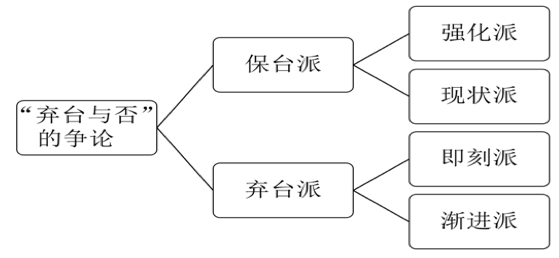
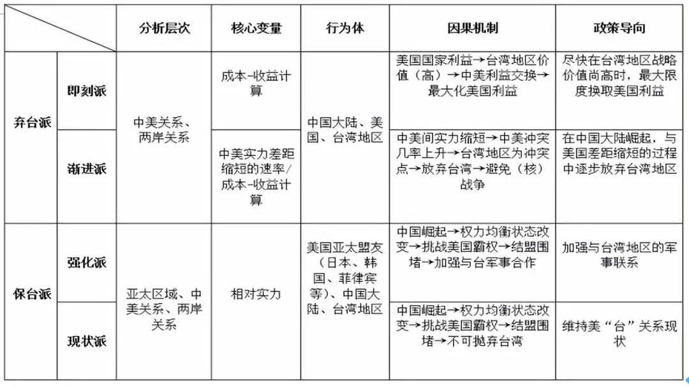
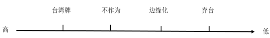
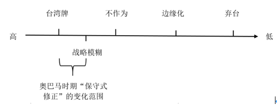
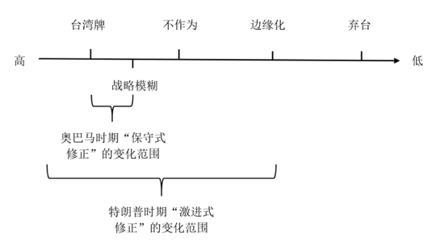

收录于合集
叶晓迪
台湾大学政治学研究所博士候选人。德国蒂宾根大学当代台湾研究中心客座研究员。
【摘要】 “弃台论”虽是美国对台政策中一支较弱的力量，但海峡两岸的学政界历来都有所关注，由此也在国内学界衍生出一系列讨论。然而既有文献却很少将关注的焦点置于弃台论的理论渊源，因而未能形成系统性的解释。本文认为，弃台论的理论意涵源自于美国离岸平衡手策略与权力转移理论，而对其进行理论辨析不仅有助于系统化现有的讨论，更能对美国未来对台政策作出有理论依据的推论。在理论辨析的基础上，本文还认为，相较于奥巴马时期的“保守式修正”，特朗普时期的“激进式修正”对台政策有可能出现两个极端化现象——快速提升台湾牌的价值与迅速使台湾问题降温——并呈现大起大落的状态。
【关键词】 弃台论；中美关系；两岸关系；对台政策
“弃台论”作为美国政界与学界对台政策中一支较为弱势的力量，由来已久。自1949年以来，美国学政界大致出现的三次关于“是否放弃台湾”的辩论。由于台湾地区属于中国不可分割的一部分，且台湾问题关乎中国的主权与领土的完整，涉及国家的核心利益，所以中国的学政界历来都对美国内部的弃台与否争论有所关注，由此也在国内学界衍生出一系列弃台论的讨论。然而，虽然这些讨论多元化了研究的视角，但很少将关注的焦点置于“弃台论”背后的理论意涵，因而未能形成系统性的解释。考虑到台湾地区一直被美国视为重要的亚太地区的地缘战略棋子，本文认为，美国“弃台论”是具有周延的理论推导，作为美国外交大战略的一部分出现的。有鉴于此，本文将聚焦于第三次“弃台论”（2009年以后）以来美国学界对台湾问题及其未来的辩论，试图从这次辩论中推演出其背后的理论意涵，弥补现有研究的不足。
本文初步发现，“弃台论”的理论意涵主要源自于国际关系理论中结构现实主义的理论脉络，主要表现为“离岸平衡手”的战略运用以及根据“权力转移理论”所推论出的大国间权力竞争的悲剧预期。同时，本文认为，台湾地区的定位在奥巴马政府时期“保守式修正”的对台政策下，变动幅度较小，有助于战略价值保值。特朗普时期转为“激进式修正”的对台政策，因而台湾问题有可能被进一步激化，从而使得台湾地区的角色在美国亚太战略布局中出现“两个极端化”现象（台湾牌价值的快速提升与台湾问题的迅速降温），并呈现大起大落的状态。
争论焦点：第三次弃台论的简要回顾
第三次“弃台论”的起始时间为2009年，几乎同步于时任奥巴马政府所推行“重返亚洲”的战略布局，并在2013年米尔斯海默（John J. Mearsheimer）到台湾地区参加学术论坛发表题为《再见台湾》（Say Goodbye to Taiwan）的演讲时达到讨论的顶峰，并持续延烧至今。在这一轮弃台论的争辩由上至下涵盖了亚太战略、中美关系、两岸关系等，形成大规模争论，被视为美国对台政策分析的阶段性汇总，同时又恰逢台湾地区内部政党轮替与美国总统的更迭而具有承上启下的意涵，使其具有高度研究价值。
承前所述，为了能够更好地透析美国内部对台政策争论的焦点，本文采取分派分析的方式，将既有文献分为弃台派与保台派，再根据学派内部的差异继续将弃台派细分为即刻派与渐进派；保台派则是强化派与现状派。如图1的树状图所示，学派之间是渐次的关系。

图1：关于“弃台与否”争论的分派方式
（一）弃台派的核心观点
先论弃台派。总体而言，弃台派的大阵营中包括如下学者：比尔·欧文斯（Bill Owens）、保罗·凯恩(Paul Kane)、查尔斯·葛雷瑟(Charles Glaser)、布热津斯基（Brzezinski）以及米尔斯海默等人。前三位属于即刻派，后两位则是缓进派。这两个分支的核心前提相同，但在何时与多快弃台上有分歧。
比尔·欧文斯认为，重新检视1979年美国与台湾地区所签订的《与台湾关系》将是开启中美间友好合作的一个新契机。欧文斯直言，《与台湾关系法》在当代已不合符美国的美国的国家利益，虽然美国仍旧需要保证台湾地区“民主与自由”的价值，但途经并非通过与中国大陆对抗，而应以开放与合作的态度。保罗·凯恩的观点与欧文斯一致，并进一步建议到，在台湾地区战略价值逐渐降低的今天，与其使美国卷入不必要的战争，还不如以此作为筹码与中国政府做交易，勾销美国欠中国1.14兆美元的债务，更有利于美国国内的经济发展。鉴于中国大陆“反分裂”的决心，葛雷瑟则认为，中国大陆对台动武的决心将会随着其实力的上升而增加，中美都为核武国家，因此美国应该尽快撤回对台湾的军事承诺，转移中美间的冲突点。
即刻派与渐进派的差别在于弃台速度的快慢。例如，布热辛斯基就认为，虽然放弃对台湾地区的军事安全承诺（特别是对台军售案）有助于消除中美的敏感点，但这个过程应是渐进的，在未来十年间实现。同样地，米尔斯海默作为进攻性现实主义学派的领军人物延续其一贯的逻辑，认为中国大陆的崛起终究成为区域霸权，在将美国力量投射范围排除出亚太区域后，便会夺取台湾。因此，在中国大陆崛起的过程中，美国应该逐步放弃台湾。
（二）保台派的核心观点
保台派也可以进一步分为强化派与现状派两个分支。总体而言，罗伯特·卡普兰（Robert Kaplan）、美籍华人学者王元刚、卜大年（Dan Bulmenthal）、卜睿哲、葛来义等人，前三位是为“强化派”，而后两位则是“现状派”的代表其中差别在于美“台”的军事合作强度方面。具体而言，卡普兰从地缘政治学的角度诠释台湾地区战略位置的重要性，他认为，两岸一旦统一，中国大陆便有了第一岛链的突破口，美国则会因为失去台湾而丧失地缘优势。卜大年则从历史的角度建议美国政府应该“破除冷战的遗产”，才能使美“台”军事关系有质的提升。王元刚以进攻性现实主义分析得出结论：他强调台湾问题并非中美之间的结构性矛盾的关键，因此无法通过放弃台湾解决矛盾。相反，美国若在台湾问题上退却会增强中国大陆的力量投射能力，所以增强美“台”军事联系才是正确选择。
现状派也认为放弃台湾将在美国的亚太盟友间产生多米诺骨牌效应，但无需进一步提升美“台”间的军事合作。例如，唐耐心（Tucker）建议奥巴马政府不应该加强对台军售的力度，维持台湾的现状既可以保证美国在亚太盟友间的战略信誉，又能使中美关系相对稳定。同样地，卜睿哲也认为，虽然“军售”与“政治支持”是美国对台湾地区两种主要支持方式，但是继续加强军售只会复杂化中美关系。
（三）小结
基于上述分派式的文献回顾，我们可以对弃台派与保台派之间的核心逻辑作一简要的总结。如表1所示，本文以分析层次、核心变量、行为体、因果机制以及政策导向等五个项目对两大派做了总结。具体而言，即刻派与渐进派在分析层次、核心变量、行为体三项大致相同（渐进派还有中美实力差距的计算），这确定它们理论前提的一致性，即：放弃台湾地区。然而，在因果机制中，即刻派仅从成本- 收益的视角认为应在台湾地区尚具价值时，尽快与中国交易才能实现美国利益的最大化，而渐进派则加入了中美实力缩短速率的考量，认为中美差距中国大陆仍需一段时间才能追上。因此，可以在中国大陆实力不断增强的过程中逐步放弃台湾。由于中美实力差距缩短速率这一参数的存在，导致政策导向的不同，从而形成两个分支学派。
相似地，强化派与现状派在分析层次、核心变量与行为体三项皆相同，因而在因果机制上，两派的推论逻辑也大致相同。不同之处只在对中国大陆采取围堵策略的“程度”不同。换言之，强化派希望通过加强美国与台湾地区的军事合作增加围堵的力度，而现状派则认为台湾地区的现状已经符合美国的围堵战略，过多地加强与台湾的军事联系只会引发中国大陆对美国的不满，不利于中美关系稳定的发展。

表1：弃台论分派总结
理论与现实链接：弃台论中的结构现实主义观点及其现实效力 **** ****
承前所述，“弃台论”的实质是美国外交大战略的一部分，这为我们追溯其理论脉络提供了方向。作为现存国际体系中的霸权国，美国的外交大战略影响着全球的权力格局，这使许多学者为美国的战略布局提供理论支持。罗伯特·阿特（Robert J. Art）提出选择性干预是美国的最佳大战略。克里斯托弗·莱因（Christopher Layne）认为美国的大战略应该战略包袱转移（transfer strategic obligation）。该观点被斯蒂芬·沃尔特（Stephen W. Walt）与米尔斯海默进一步发展成为离岸平衡手战略（offshore balancer）。虽然上述几位学者对美国的对外战略设计提出不同的看法，但是在两大方面却是共通的：第一，美国大战略的设计大都立基于（结构）现实主义；第二，虽然名称不同，但实质都认为如若美国想要维持其单极优势的地位，就必须避免过多的国力消耗和被卷入地区事务纷争。同时，结合前述文献回顾，弃台论的另一个预期在于中美冲突发生的可能性，由此可以推论出弃台论与结构现实主义视角之间的“、理论连接点主要是：离岸平衡手战略与中美权力转移过程中对“霸权战争”的预期。
（一） 理论连接点1：弃台论与离岸平衡手策略
自美苏冷战结束以来，学者们建议美国从地区事务中抽离，仅需维持低限度的海外力量投射。这样的战略思维经历了几个阶段的发展：莱因、米尔斯海默与沃尔特为代表，他们分别从体系转变、进攻性现实主义与防御性现实主义视角切入分析美国的大战略设计。就时间序列而言，莱因应是最早提出“离岸平衡”策略的学者。他从体系转变的角度切入，提出相较于两极体系中的单一敌对国家，多极体系下美国所要面对的潜在敌对国家将超过一个，并且这些潜在敌对国有可能因为美国独霸的实力而形成所谓的“反美同盟”。由此可见，美国的超强国力是一把双刃剑，继续在世界范围内采取单极优势战略（preponderance strategy）不仅会增加美国的安全威胁，还有可能导致美国过度使用其超强国力而陷入过度扩张。因此，美国应通过采用离岸平衡手的策略，进行战略包袱的转移，才能在21世纪继续维持其霸主地位。
米尔斯海默是第二位对离岸平衡手做出详细论述的学者。具体而言，米尔斯海默的进攻性现实主义认为极大化的权力同等于极大化的国家安全，但由于巨大水体的阻隔，大国最终只能成为区域霸权。美国作为世界上唯一的区域霸权，在其他地区中扮演着离岸平衡手角色，使同一区域内的其他大国来制衡竞逐霸权的国家。防御性现实主义的代表学者沃尔特也极力倡议离岸平衡手策略。与米尔斯海默的权力极大化观点不同，沃尔特立基于维持体系内大国间均势的考量，强调除了涉及的美国至关重要利益的地区部署必要军事力量以外，无需的过多地参与地区性的事务，避免被盟友卷入不符合美国利益的冲突甚至战争中。
依循上述的理论脉络，三位代表人物虽然分别从体系转变、权力极大化以及威胁平衡的视角提出离岸平衡手策略，但其中的核心逻辑是一致的，亦即：美国作为既存的霸权国，拥有着超强国力，但这种国力是一把双刃剑，有可能使美国在单极体系时代走向过度扩张而衰弱或促成反美联盟的出现；为了避免此种情况的发生，美国的最佳战略应是扮演离岸平衡手，仅维持必要的军事力量投射，避免被卷入地区纷争。由此可见，离岸平衡手是美国全球范围内的“战略收缩”，通过减少对盟友的军事承诺，使得区域内的国家相互消耗以达到相互制衡的目的。“放弃台湾”自然是选项之一。
（二） 理论连接点2：弃台论与霸权战争论
弃台论第二个与现实主义的连接点是政学界人士对中美关系的悲观预期。这主要源自于现实主义的另一分支：权力转移理论。就理论假定而言，权力转移理论认为权力不均衡才是国际体系稳定的根源。该理论根据权力大小将国家区分为支配性强权、一般强权、中等国家与小国，并以此由上至下地建立一个金字塔体系，由支配性强权管理国际秩序。由此推论，当支配性强权出现衰弱，无法维系国际秩序时，一般强权便有能力竞逐支配性强权的位置，因而，冲突与战争就在支配性强权与新兴崛起国之间产生，这就是所谓的“霸权战争”。然而，早期的权力转移的理论逻辑属于物质力量决定论，因此，在后续的理论发展中，权力转移学派加入了意图性的因素，将国家区分为满意国家与不满意国家。换言之，只要能管理好崛起国的意图，霸权战争是可以避免的。
当今的中美关系便是权力转移理论应用的经典案例。对于中美关系而言，美国如何通过管理敏感议题控管好崛起中国的意图成为和战的关键。台湾问题因此成为左右中美关系转移方式的核心变量。有鉴于此，部分秉持弃台论观点的学者认为舍弃台湾地区便能有效地避免战争替代转移的发生。由此可见，放弃台湾这一选项的部分原因源自于对中美关系的悲观预期，成为弃台论与现实主义的理论的第二个理论连接点。
基于上述“弃台论”与理论连接的讨论可以看出，美国所看重的是台湾地区对于美方在亚太地区的战略价值，因此，根据价值的高低之分简要地类型化出台湾地区在中美权力竞争下的几种定位：台湾牌、现状无作为、边缘化以及弃台（如图2）。

图2：美国对台政策的定位
（三）弃台论的现实效力及意义
既然弃台论的理论渊源来自结构现实主义的观点，那么它是否如现实主义流派一般在美国的外交战略中具有较强的现实效力呢？美国历届政府所秉承的三个联合公报和《与台湾关系法》构成了其对台政策的结构性框架，这为我们讨论弃台论的现实效力提供重要的事实依据。就本质而言，近年来（从奥巴马到特朗普），美国对台政策并未出现结构性的变化，导致弃台论的现实效力受到较大的限缩。美国对台政策的稳固性主要由中美关系间的结构性因素决定：进入21世纪以来，中国大陆相对实力的迅速增长，特别是2008年的金融危机后，中美间的实力差距缩短的速率加快，这对霸权国美国造成巨大的结构性压力。为了“遏制”中国大陆在亚太地区快速扩大的影响力，美国形成所谓“第一岛链”的围堵圈，而台湾地区所处的地缘位置则是围堵圈内不可或缺的一环。反事实来看，倘若美国决定放弃台湾，那么这个围堵圈将出现一个“缺口”，致使美国在亚太地区影响力衰退，而中国大陆则可以藉此打破被遏制的困局。台湾问题毕竟涉及美国重返亚太以来的重大战略利益，而中美间的结构性矛盾也使美国短期内无法放弃敌对台湾牌的使用。就对华政策制定层面而言，美国一向秉承“两手抓”策略，亦即：一方面对中国大陆宣称坚持以“三大联合公报”为基础的“一个中国政策”，致力于维持中美间平稳的大国关系；另一方面，美国历任总统亦未放弃对《与台湾关系法》的坚持，持续通过经贸交流和对台军售等方式保持与台湾地区的非官方联系，甚至时而加入对台的“六项保证”，意在维持两岸关系的“健康平衡”。由此可见，在美国对华政策并未出现结构性的转变前，弃台论的现实效力将因中美的结构性矛盾与美国在亚太地区的重大战略利益而受到较大的限制。但这是否意味着弃台论是无意义的争辩？
诚然，既有对弃台的争辩依旧停留在思考与舆论的层面，但仍不妨碍为我们带来理论与现实层面的反思。在理论层面，霸权力量的衰弱使美国国内开始反思其全球战略布局，希望通过合理的战略收缩来避免过度扩张现象的出现。这点符合前文讨论的美国“离岸平衡手策略”。同时，在中美相对实力的此消彼长间，美国国内开始务实地思考中美关系陷入“修昔底德陷阱”的可能性。对中美关系悲观的预期亦符合前文所述的霸权转移的观点。上述两点实质上构成了美国重新审视中美关系与调整对台政策的决定性外部环境。在现实层面，有学者认为弃台论的影响主要体现在如下几个方面：第一，使《与台湾关系法》的合理性遭到全面的质疑，美国对台军售的“法理”基础受到冲击；第二，使美国国内的“保台派”面临两面作战的局面；第三，国会内部赞成和反对军售两种声音同时放大；第四，明化了美国利用台湾地区遏制中国大陆崛起的战略意图。概言之，虽然美国短期内无法放弃“以台制华”的战略；但就长期而言，中国只要保持良好的崛起势头，逐步将美国的力量投射排挤出亚太地区，那么美国将来大幅度调整对台政策将是不可避免的事实。换言之，弃台论的理论与现实意义更在于为未来美国对台政策，乃至对中美关系调整的“预演式”的反思；为未来解决台湾问题提供潜在途径。事实上，在本轮弃台论的争辩中，美国的对台政策已经出现“总体框架不变，局部修正的态势”，这在后文中奥巴马时期的“保守式修正”与特朗普时期美国对台政策的“激进式修正”的对比中可见一斑。
政策检验：奥巴马政府对台政策的“保守式修正”
在后反恐战争时代，奥巴马政府推出“亚太再平衡”战略，从中东战略收缩，将有限的战略资源集中在亚太地区，主要目的是遏制中国快速崛起。美国的战略东移透露其“重返亚洲”的决心，使“离岸平衡手式的战略收缩”成为泡影，因而弃台论在短期内无法实现。
在总体框架层面，奥巴马自上任以来便宣称美国的对台政策将恪守“中美三公报一法”的“一个中国”政策。基于此框架，美国有效地控管了会引起崛起中国改变现状意图的敏感议题。该阶段的“弃台论”部分是源自于台湾地区在“再平衡”战略中的位置问题。对于奥巴马政府而言，再平衡的战略对象自然是崛起中的中国大陆，而要完成遏制与围堵，第一岛链变得至关重要，这就凸显了是否要将台湾地区正式纳入再平衡战略的不同观点。虽然奥巴马政府并未采取离岸平衡手策略，但是秉持弃台论的学者依旧延续中美关系悲观预期的观点，强调若正式将台湾地区纳入再平衡战略有可能使中国大陆认为台湾是限制其崛起的一张牌，这样将损害中美关系，也不符合台湾地区的自身利益。相应地，保台派的学者则认为不纳入台湾将成为第一岛链中的战略漏洞。
在局部修正层面，奥巴马政府的对台政策采用“保守式修正”亦即：在台湾牌与不作为之间取中间值——“战略模糊”，既不挑战中国大陆的战略底线，也将符合美国在亚太区域的战略布局。例如，时任国务卿希拉里·克林顿在其发表被视为“再平衡”张略宣言的《美国的太平洋世纪》一文中并未正式提及台湾地区的定位问题，但却在夏威夷中西交流中心的讲话中，非正式地将台湾地区界定为美国在亚太地区的“安全与经济伙伴”，这一举措不仅有意识地模糊了台湾地区在美国战略部署中的位置，还提升了台湾地区在中美互动之间的灵活性。
奥巴马政府对台政策的“战略模糊”政策有如下几个好处，具体可分为三个层次：首先，中美关系层，奥巴马政府希望能够有效地地控管进而避免中国大陆产生改变现状的意图，所以在面对“台湾问题”时，美国方面吸取前两次台海危机的经验，不愿贸然地将台湾地区卷入其亚太的战略布局中。其次，在两岸关系层面，与陈水扁时期的“坏孩子策略”相比，马英九当局所提出的“不统、不独、不武”的“好孩子策略”更符合奥巴马政府的利益。最后，在具体战术层面，不正式将台湾地区纳入再平衡的同盟体系中，不仅能够回避中美的敏感点，更可以暗化台湾地区在美国亚太战略中的真实作用，即：暗化台湾地区的定位有助于推动中美战略互信，还能在必要的时候将其作为中美战略谈判时的筹码。因而此举对于美国而言是一举多得的最适选择。综上所述，奥巴马政府“保守式修正”的对台政策的实质是一种战略保值，将其台湾地区的价值维持在相对高位（如图3），因而在此阶段中，台湾地区的战略价值变动幅度较小，介乎台湾牌与战略模糊之间。

图 3 ：奥巴马时期对台政策变化范围
政策变化：特朗普时代对台政策的“激进式修正”
美国的外交战略的调整往往伴随着总统的更迭而产生。对台政策作为传统美国亚太战略规划的一部分，不可避免地受到总统轮替的影响而发生重大改变。与奥巴马不同，本文认为特朗普政府的对台政策采取了“激进式修正”的方式，具有如下几个特点：
首先，相较于奥巴马时期的平稳，特朗普的对台政策的变化幅度将出现“大起大落”的状态，亦即：快速提升或削弱台湾牌的价值。这主要由特朗普政府的美国优先原则与谈判策略所决定。美国优先的要义在于以美国主义代替全球主义。延伸至外交领域，任何外交工具都应该优先服务于美国的国家利益，台湾地区亦不例外。在策略手段方面，与奥巴马政府尝试通过重塑亚太区域的规制来遏制中国的策略不同，特朗普政府更倾向于通过交易谈判的方式与中国大陆互动。特朗普早在竞选时便通过其幕僚在《外交政策》上发表文章，明确美国手中握有能够掌握中国的牌，这除了经贸牌、朝核牌与南海牌以外，也包括台湾牌的使用。其次，在保持对台政策的总体框架下，特朗普政府将通过重新诠释和增加“一个中国政策”的内容，进一步空洞化其内涵，以利于台湾牌的使用。美国“一个中国政策”的空洞化在提升了美国对台湾牌的操作空间的同时，也使得中美间在处理台湾问题上的空间缩窄，这将为中美关系注入更多不确定因素。最后，虽然美国这段时期的对台政策将出现大起大落的态势，但是维持两岸关系的和平仍符合美国的战略利益，并且美国可以在其中发挥更大的作用。自特朗普胜选以来，美国的对台政策可以粗略地分为三个阶段：大起、回落、再起。
（一） 特朗普对台政策的大起
特朗普除了对传统亚太盟友表示战略再保证以外，调整对台政策成为他实践亚太战略理念的第一步。2016年12月2日，特朗普当选美国总统与蔡英文当局直接通话。谈话内容涉及蔡英文当局所关注的台湾的“国际空间”、美“台”关系、经贸联系以及军事防御承诺等问题。这是自1979年以来，首位候任的美国总统直接与台湾地区领导人通话，打破了中美之间在台湾问题上维持30多年的默契。作为美国候任总统，特普朗并非对“一中原则”一无所知，正如他在接受美国福克斯新闻网的访问中表示：充分了解美国的一中政策，但是不解中美双方针对贸易等议题达成协议前，美国为何一定要被这个政策所捆绑。在回答《华尔街日报》问题时，特朗普再次强调，所有的原则（包括一中原则）都是可以谈判与协商的。尽管中国外交部义正言辞地表明不可谈判的立场，特朗普依旧维持其强硬的姿态。例如，特朗普的高级顾问博尔顿（John Bolton）更为激进地认为，美国不仅应该重新检视“一中原则”，还应该通过减少日本驻军，转而驻守台湾。特朗普政府此举主要有两大考量：通过对“一个中国原则”的挑战，特朗普一方面期望以此展现其对华强硬的态度，以兑现在竞选时的承诺，一方面也希望打破中美“台”固有的三边互动模式，对中国大陆施压。
在上述一系列作为之后，台湾地区不仅将此举视为“历史性的突破”，也使其“国际关注”达到了峰值，各大主流外媒争相报道。一时间，台湾牌在特普朗时代的重要性似乎前所未有地提高。然而，此举也引起不少关注台海问题学者的担忧。例如，在特朗普挑战的“一中原则”后，台湾学者从现实主义的角度警醒道，特朗普与中俄谈生意的可能性高于奥巴马与希拉里，利益交换很可能成为新一轮弃台的情境与逻辑。
（二） 特朗普对台政策的回落
台湾学者的担忧，从上述特朗普对台政策的特点便可推出一二：首先，以美国优先为根本原则，特朗普政府挑战一中原则的根本目的不在于重申对台防务的承诺，亦非出于传统对台政策中的道义帮助，而是盘算着如何利用台湾牌现存战略价值的提高作为与中国大陆在经贸问题中的谈判筹码，以最大化美国的利益。其次，特朗普政府所擅长的交易策略，更进一步将台湾地区作为交易物件摆上谈判桌，增大中美间利益交换的可能性。最后，特朗普政府有热炒台湾问题的嫌疑。换言之，如同股票市场中的题材股短期热潮后会大概率回落甚至一蹶不振，台湾问题也被特朗普视为短期能够快速提高筹码的工具，但也可能由于其他议题的出现而快速冷却。简言之，特朗普打破中美传统对于台湾问题的默契虽然短期内最大化了台湾牌的战略价值，但却也存在“过度消费”的可能。因此，有评论指出，蔡英文当局实质上为“特蔡热线”付出了高昂的代价，甚至连卜睿哲（Richard Bush）都以“公开信”的方式向特朗普政府建议，必须要重视“一中原则”，而不能将台湾地区当做与中国大陆政治博弈的筹码。
事实上，“特蔡热线”之后的美“台”关系走势经历了一段高开低走。台湾地区的国际曝光度主要集中于2016年12月至2017年2月。这段时间主要是特朗普作为候任总统的过渡时期，这既给予特朗普团队足够的灵活与模糊的空间挑起台湾问题事端，同时也能在过渡时期展现其对华强硬的态度。然而，在2017年1月21日宣布正式就职美国总统后，特朗普政府对于“一中原则”的态度发生明显的转变：先是在2月10日与习近平主席的通话中表示美国将信守的一中原则；实现对一个中国的回归而后，在4月的“习特会”中，美方再次重申其一个中国的立场，并表示台湾问题不会有意外发生。并且，在同月美台的隔空对话中，特朗普正式拒绝了蔡英文当局再次“特蔡热线”的请求，避免给中国大陆制造麻烦，这无疑给蔡当局浇了一盆冷水。同时，由于这段时间以“朝核危机”这一议题为主，吸引了特朗普政府的大部分战略注意力，成为中美竞争与合作的主要场域，使特朗普的注意力快速转移，加速台湾问题的降温，导致台湾地区在一段时间内回落至“不作为”的状态。
（三） 特朗普对台政策的再起
2017年12月18日，特朗普任内首份《国家安全战略报告》的出炉，美国正式将中国视为“战略竞争对手”，不仅显示特朗普政府对华政策调整的意图，更标志着中美两大强权进入全面竞争时代。在“大国竞争”的时代背景下，作为中美博弈热点的台湾问题再次升温。为配合与中国大陆全面竞争的一揽子筹划，特朗普政府为台湾牌的“加码”做出了相应的动作。在《国家安全战略报告》发出前，特朗普政府先是签署了美国2018年的《国防授权法》，其中值得关注的部分为美国国会要求重新评估美台军舰互相停靠的可能性。尽管中国大陆官方对美国干涉中国内政事务表示强烈的不满，但美国国防部亚太助理部长薛瑞福（Randall Schriver）仍表示美台军舰互访是“完全符合美国的一中政策”。虽然有分析指出这一举动的象征意义大于实质意义，但无疑还是为特朗普政府进一步空洞化“一中政策”做了铺垫。延续此逻辑，2018年3月16日，特普朗政府通过国内法，签署《台湾旅行法》，允许美国所有层级的官员访问台湾，允许台湾高阶在“受到尊敬的条件下”来到美国与之国防部、国务院等高官会见。《台湾旅行法》的签署是继《与台湾关系法》后，美国首个与台湾直接相关的国内法。承前所述，特朗普政府对台政策的“激进式修正”的重点之一是增加美国“一个中国政策”的内容，用以操作台湾牌，而《台湾旅行法》便是具体的举措，因而具有重要的参考意义。因此，美国此举也被视为特朗普政府为了与中国进行权力竞争所祭出“组合拳”中的，对台湾牌的再次使用。
无独有偶，特朗普政府国家安全团队的人员更换亦透露出台湾牌再起的势头。2018年3月23日，在签署《台湾旅行法》后，特朗普决定启用约翰·博尔顿（John Bolton）接替麦克马斯特担任国家安全顾问。如前所述，博尔顿作为特朗普竞选幕僚之时便建议重新审视美国的“一个中国政策”，且提议实现在台驻军，在接任国家安全顾问后，大概率将再次屡践其理念，可能对美国“一个中国政策”再做新的诠释。配合上法令的许可，不排除博尔顿将成为实践《台湾旅行法》的第一位美国高层官员。
由此可见，特朗普政府对台政策所采取的“激进式修正”虽然未公开颠覆中美关于“一个中国”的总体框架，但在局部部分却显现出较大幅度的修正。在上述“大起-回落- 再起”的过程中，特朗普先是直接挑战“一中原则”，而后冷却台湾问题，进而又通过增加法令的方式空洞化美国的“一个中国政策”为重打台湾牌做准备。未来，美国还有《台湾安全法》等涉台法律将视情况决定通过与否。这种蚕食“一个中国政策”的做法增大了美方的灵活性，使得特普朗政府对台湾牌的使用呈现大起大落的态势，既能极大化台湾牌的价值，亦可随着关注议题的变动而迅速边缘化台湾问题。因此，台湾地区的价值变动幅度较之于奥巴马时期大幅提升（如图4）。

图4：特朗普时期对台政策变化范围
结论
虽然“弃台论”一直被视为美国对台政策的非主流观点，但毕竟是其战略规划的分支，因而具有研究的价值。本文将“弃台论”进一步细分为保台派（强化派与现状派）弃台派（即刻派与渐进派），通过文献的交叉比对的方式，以分析层次、核心变量、行为体、因果机制与政策导向等五个项目的归纳出两派的核心观点。进而，本文基于上述核心观点，追溯弃台论背后的理论脉络，将其与离岸平衡手与权力转移理论相联系，补充既有研究中对弃台论理论总结不足的缺陷。同时，除了理论层面，本文还进一步探讨了弃台论的现实意义，认为虽然美国弃台的选项因为受到其对华政策总体框架不变的限制，短期内实现的可能性很低；但是，弃台论的争辩却为美国面对中国大陆长期崛起而调整对华政策进行“预演式”的反思，探索中美未来解决台湾问题的潜在途径。
厘清弃台论的理论与现实意涵有如下三个好处：第一，理论脉络能够帮助研究者们追溯美国对台政策的关键变量，亦即：台湾地区在美国亚太布局中的价值高低与中美关系的悲观预期与否。第二，在理清关键变量的基础上，研究者们可以用以检视美国对台政策的具体操作以及未来的演变与发展。第三，根据弃台论的现实意义，研究这可以为台湾地区的定位划定上限（台湾牌）和下限（弃台），有助于类型化台湾地区的定位，亦即：台湾牌、现状无作为、边缘化与弃台，细化了变动的区间（如图2）。
根据上述光谱，本文简要地检验了奥巴马时期与特朗普时期对台政策的不同。较之于奥巴马时期的“保守式修正”而言，特朗普政府对台政策属于“激进式修正”，导致其对台政策变化的幅度增大，既能快速将台湾牌的价值提升至极致，亦能通过议题转移使台湾问题迅速降温。本文预计，在特朗普未来的任期中，台湾问题将因中美大国关系的好坏而持续呈现大起大落的状态。在此时期，美国放弃台湾的几率较低，但台湾地区的定位变化将落在台湾牌的极大化与边缘化之间（如图4）。特朗普政府操作对台政策的手段主要集中在逐步通过增加相关法令与内容蚕食和空洞化美国的“一个中国政策”。同时，特朗普也有可能提升对台军售的等级（如加入F-35先进战机与潜艇技术等），辅助“加码”台湾牌的运用。因此，除了对《台湾旅行法》进行实践以外，不排除《台湾安全法》等涉台相关法律视情况而加入美国的“一个中国政策”中。中国大陆如何在不确定性增多的台湾问题中保护国家核心利益，维护主权与领土的完整，则是未来所要关注的重要问题。
文章选自《台湾研究》2018年第3期
筛选：晞哲 编辑：里仝